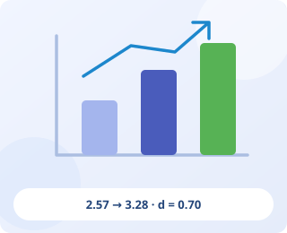

시나브로 × ME 프로젝트
2026. 7. 10.(금)
개인 창작인 ME 프로젝트 전 과정을 공개했습니다. 수업을 기획·총괄하고 참관 자료 20쪽을 집필했으며, 연구회 소개 영상·학생 우수작품 상영·참관 QR 설문으로 수업 나눔을 구성했습니다.
AI가 만드는 음악을 넘어,
스스로 생각하고 선택하는 학생을 기릅니다.
3학년 9개 학급 참여
함께하는 음악교사
직접 개발한 웹 플랫폼
AI·디지털 직무연수 이수
“AI가 30초 만에 노래를 만드는 시대,
음악 수업은 학생에게 무엇을 남겨야 하는가.”
지원서의 실천과 계획을 다섯 개의 이야기로 정리했습니다.
각 그림에서 핵심을 살펴보고, 문단을 펼쳐 구체적인 내용을 읽어보세요.
한 교실에서 시작한 변화가 동료 교사의 공유 자산이 되기까지.
QR을 스캔하거나 카드를 누르면 해당 자료가 새 탭에서 열립니다.
도 단위 공개수업의 안내·과정 시연·참관 협의를 한곳에서 살펴봅니다.
2026. 7. 10.(금)
개인 창작인 ME 프로젝트 전 과정을 공개했습니다. 수업을 기획·총괄하고 참관 자료 20쪽을 집필했으며, 연구회 소개 영상·학생 우수작품 상영·참관 QR 설문으로 수업 나눔을 구성했습니다.
2026. 11. 20.(금)
개인 창작에서 모둠 뮤지컬 창작으로 확장하는 WE 프로젝트입니다. 보고서에는 예고 자료와 본시 교수·학습 과정안 작성이 완료된 것으로 기재되어 있습니다.
창작의 방향과 ME 프로젝트의 흐름을 참관 교사에게 공유합니다.
디지털 도구를 활용하는 제작 과정을 보여 주고 학생 작품과 연결합니다.
참관 의견을 다음 차시의 설계와 2학기 운영안에 반영합니다.
근거: 학교예술교육 연구보고서 ‘서로 참관하다’ 및 ‘도단위 공개수업’ 자료, 기존 지원서 공개수업 운영 문단. 2차 공개수업은 보고서에 기재된 예정 상태로 표시했습니다.
공개수업 운영 문단 자세히 읽기 ↗수업에서 검증·확산·환류까지, 함께 성장하는 수업 생태계를 만들었습니다.
2025년 창의예술 프로그램(20차시)에서 출발한 AI 음악 창작 수업을 2026년 3학년 9개 학급 265명 전원의 교육과정으로 확대하고, ‘수업 실천 → 근거 검증 → 동료 확산 → 설계 환류’의 순환형 확산 체계를 구축함. 한 교사의 우수 수업을 교사 학습공동체의 공유 자산으로 전환하는 데 초점을 둠.
역할을 나누는 분산적 리더십으로 학습공동체가 2.25배 성장했습니다.
분산적 리더십 구조 설계: 회원 12명에게 연수·자료 개발·사례집 편집·성과 확산 등 12개 역할을 부여하고 입회·등록·정기 모집 절차를 제도화 → 9개교 12명에서 음악교사 27명 규모의 학습공동체로 성장(2.25배)
학교 계정과 간단한 설정으로 다른 학교에 이식 가능한 플랫폼을 만들었습니다.
직접 개발한 웹 플랫폼 8종(감상·수행평가·뮤지컬 공동 창작·연구 공유 등) 무료 공개. 교육청 발급 학생 공통 계정 인증을 써서 설정 두 줄만 바꾸면 타교 이식 가능, 운영비 0원
학생들의 공연과 관객의 참여가 만나는 소축제 현장입니다.
실제 운영에서 발견한 어려움을 수업 도구의 개선으로 연결합니다.
역할 편중과 첫 결과 그대로 사용하기에 대응한 역할 카드·프롬프트 카드의 개선 방향입니다.
설계–실행–검증을 연결하는 음악 수업과 자기주도적 전문성.
QR을 스캔하거나 카드를 누르면 해당 자료가 새 탭에서 열립니다.
무엇을 배우고 어떤 순서로 참여하는지 보고서의 도표로 살펴봅니다.
감상에서 자기표현, AI 협력, 실제 청중과의 공유로 이어지는 수업 구조입니다.
교육과정 성취기준, 프로젝트 활동, 차시와 연계 교과를 함께 보여 줍니다.
개별 탐색에서 모둠 활동과 전체 공유로 이어지는 학습활동을 확인할 수 있습니다.
도입·전개·정리 단계에서 교사와 학생이 수행할 활동을 정리한 보고서의 과정안입니다.
자기표현, 생성형 AI 활용, 디지털 이해와 협력의 평가 기준을 살펴봅니다.
시나브로와 BRIDGE-AI 연구보고서에 수록된 실제 수업 사진 18장으로, 기록·디지털 도구 활용·협력의 과정을 살펴봅니다.
보고서는 감상과 자기이해에서 출발해 가사와 창작 의도를 기록하는 과정을 제시합니다. 태블릿과 종이 활동지를 함께 사용하는 학생들의 장면을 모았습니다.
두 연구는 AI 결과를 그대로 제출하기보다 두 가지 결과를 비교하고, 선택 근거와 수정 이력을 남기는 수업을 강조합니다. 아래 사진은 학생들의 디지털 도구 활용 장면입니다.
선택한 내용을 설명하고 동료의 의견을 듣는 과정이 창작을 이어 줍니다. 학생들이 서로의 화면과 생각을 공유하는 모습을 가까이에서 보여 줍니다.
RUPA와 프롬프트 4칸 카드로 인간–AI 협업 과정을 학습 증거로 남깁니다.
인간×AI 협업 창작 모델: 반응–이해–표현–성찰의 RUPA 4단계로 설계. Suno로 음원 2종을 생성·비교하고 선택 근거를 음악 개념어로 진술. 프롬프트 4칸 카드(역할·상황과 금지어·음악적 장치·2종 비교)로 프롬프트를 구조화하고 수정 이력을 과정중심 평가의 학습 증거로 활용. Claude로 리릭 플레이어, Canva·이미지 생성 AI로 장면 이미지 제작

사전·사후 설문, 서술형 응답, 산출물을 함께 분석했습니다.
효과 검증: 사전(N=192)·사후(N=191) 설문 5개 영역 모두 유의하게 향상(p<.01), 창작 역량 2.57→3.28(Cohen’s d=0.70). 서술형 응답 코딩·산출물 대조를 더한 양적·질적 삼각검증으로 해석하고, 수행 결과를 세특 기록으로 이어 수업–평가–기록을 일체화
2026년 선도교사 연수 외 AI·디지털 직무연수를 이수했습니다.
연수 이수: 선도교사 연수 외 AI·디지털 직무연수 6과정 87시간(2026)
서로 의견을 나누고 태블릿으로 작업하며 작품을 감상하는 수업 장면을 모았습니다.
AI·디지털 수업부터 실증과 코칭까지, 서로 다른 연수 장면을 살펴보세요.
활동 사진에 학생의 응답과 수정 이유를 더해 학습 과정을 보여 줍니다.
떠올린 장면과 감정 태그가 가사와 활동 소감으로 이어지는 응답 예시입니다.
템포와 조성에 대한 학생의 판단이 작품 수정으로 연결되는 진술입니다.
연구·공개수업·콘텐츠로 이어지는 현장 중심의 대외 활동.
QR을 스캔하거나 카드를 누르면 해당 자료가 새 탭에서 열립니다.
정량 도표, 측정 문항, 서술형 응답을 함께 배치했습니다.
보고서에 제시된 긍정 응답률, 영역 평균과 효과크기를 함께 확인할 수 있습니다.
사전·사후 문항의 구성을 함께 제시해 변화 도표를 해석하는 근거를 보여 줍니다.
AI 인식의 전환, 성취와 효능감, 진로 연결이라는 세 범주의 응답 분석입니다.
학생이 느낀 부담과 개선 계획을 함께 기록한 성찰 자료입니다.
해석 안내: 보고서의 사전 조사 N=192, 사후 조사 N=191이며 문항 구성도 다릅니다. 영역별 대응 방식과 보고서의 분석 한계를 함께 살펴보세요. 이 도표만으로 수업의 인과 효과나 학생 개개인의 변화를 단정하지 않습니다.
표현·검증·연결의 장벽에 시도·설명·탐색·공유로 응답했습니다. 심사 진행 중입니다.
스마트교육 「BRIDGE-AI」: 사전 진단으로 도출한 세 장벽(표현·검증·연결)에 4개 실천 전략(시도·설명·탐색·공유)을 처방하고, 사전·사후 설문을 Welch t-검정·효과 크기로 검증한 실증 기반 연구 설계. 본문 20쪽·부록 20쪽 보고서를 32차에 걸쳐 수정·검토해 9. 18. 제출, 서면·발표 심사 진행 중
감상부터 자기 이해, 창작, 검증, 공유에 이르는 성장 경로를 연구했습니다.
학교예술교육 「시나브로」: ‘AI가 30초 만에 노래를 만드는 시대, 학교예술교육은 무엇을 남기는가’를 탐구 질문으로 감상 → 자기 이해 → 창작 → AI 검증 → 공유의 예술적 성장 경로를 4개 실천과제로 구조화하고, 수업 사진 243장으로 재구성한 보고서 웹을 함께 공개
학교 진로활동을 관계 기반 모형으로 재구성하고 개선 도구를 제안했습니다.
진로교육 「오작교」: 학교 실천자료 15건과 진로캠프 설문 505명 응답을 분석해 학교 진로활동을 관계 기반 운영 모형으로 재구성하고 공통 기록지·질문 카드 등 개선 도구 제안
진로체험 부스, 직업 탐색과 모둠 활동의 장면입니다.
과정 평가, 안전한 AI 활용, 재현 가능한 확산을 위한 글로벌 연수 지원 동기.
QR을 스캔하거나 카드를 누르면 해당 자료가 새 탭에서 열립니다.
결과를 받는 학생에서 비교하고 선택하며 고치는 창작 주체로의 변화를 추구합니다.
“AI가 30초 만에 노래를 만들어 주는 시대에 음악 수업은 학생에게 무엇을 남겨야 하는가.” 이 질문이 지난 한 해 수업 설계의 출발점이었습니다. 2026년 3월 사전 진단에서 ‘내 생각을 담아 가사를 만들 수 있다’는 긍정 응답은 11.5%에 불과했습니다. 연주 기능을 전제하지 않는 창작 경로를 열고, AI 산출물을 그대로 쓰지 않고 두 결과를 비교해 선택 근거를 음악 개념어로 설명하게 하자 가장 낮았던 창작 역량이 가장 크게 성장(d=0.70)하였습니다. 인공지능 활용 선도교사 연수에서 배운 생성형 AI의 교육적 활용 원칙을 ‘수정 이력을 학습 증거로 삼는 평가 설계’로 구현하자, 학생들은 AI의 결과를 비판적으로 고치는 주체로 바뀌었습니다.
사고 변화를 읽는 평가, 학교의 AI 활용 기준, 확산의 제도화가 필요합니다.
그러나 실천을 거듭할수록 세 가지 과제가 분명해졌습니다. 첫째, 인간–AI 협업 창작에서 학생의 사고 변화를 더 정밀하게 포착하는 과정 기반 평가 체계의 고도화입니다. 둘째, 생성형 AI 도구의 연령 기준·개인정보·저작권을 교사 개인이 약관으로 매번 확인하는 방식, 곧 학교 단위 AI 활용 기준의 부재입니다. 셋째, 좋은 수업이 한 교사의 역량에 머물지 않고 다른 학교에서 재현되도록 하는 확산의 제도화입니다.
박람회·교육기관 방문·동료 교류를 통해 세 과제의 해법을 탐색하고자 합니다.
이 과제의 해법을 세계의 교육 현장에서 찾고자 지원합니다. 수업 모델을 다른 학교로 넓혀야 하는 2027년을 앞둔 지금이 시야를 넓힐 적기라고 판단했습니다. Bett UK 2027은 AI 기반 학습·평가 도구, 창작 도구, 학교 데이터 보호 솔루션이 한자리에 모이는 세계 최대 에듀테크 박람회입니다. 영국은 국가 음악교육 계획(NPME, 2022)에 따라 지역 음악교육 허브(Music Hub)가 학교와 협력해 음악교육을 지원하고, 교육부(DfE)가 「Generative AI: Product Safety Expectations」로 생성형 AI 제품 안전 기준을 제시하고 있어 제 과제와 직접 맞닿아 있습니다. 이번 연수는 우리나라의 AI 활용 교육사례를 해외에 알리는 동시에, 박람회 참관에 그치지 않고 현지 교육기관 방문·교류, 조별활동, 사전·사후 세미나, 연구대회 입상 교사와의 통합 운영으로 이어지는 단체 연수로서, 본 것을 동료와 함께 해석하고 우리 교실의 언어로 번역하는 협력적 성찰 과정이라고 이해하고 있습니다.
2027년 공유–적용–확산으로 이어갈 실행 계획과 성과 목표.
QR을 스캔하거나 카드를 누르면 해당 자료가 새 탭에서 열립니다.
귀국 후 배운 내용을 동료가 곧바로 활용할 수 있는 형태로 정리하겠습니다.
1단계 공유(2027. 1.~2.)
내 수업, 다른 학교, 다른 교과에서 실행하며 자료를 보완하겠습니다.
2단계 적용(2027. 3.~7.)
연구회·학교·시도·연수 동료를 잇는 지속적인 실천을 이어가겠습니다.
3단계 확산(2027. 하반기 이후 지속)
도구가 바뀌어도 남는 절차.
담당자가 바뀌어도 이어지는 수업.
그 지속 가능한 변화를 만들어 가겠습니다.